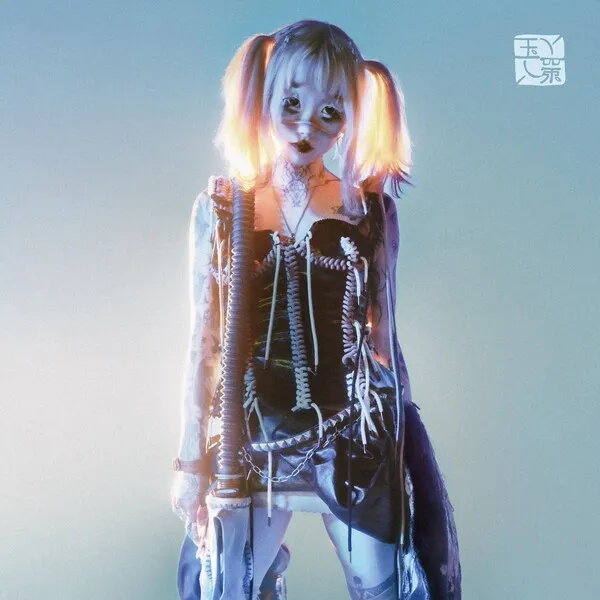

Softscars
9/10
AI becoming more human
I think Yeule's aesthetic and concept is genius.
A hyperreal, AI program with a humanoid Avatar housed somewhere in the digital realm.
Making music to try and communicate with humans.
Looking back on their first album, Serotonin II was a lot more abstract compared to this.
It really does present that aesthetic of an AI's first attempt at trying to make enjoyable music to humans.
The sounds used are a lot less focused on traditional instruments, instead it uses glitchy sounds.
Yet, I'd say the songs are still structured in a familiar manner, and the memorable melodies make them generally catchy.
Glitch Princess felt more like the AI embracing its synthetic, digital nature. Learning more about itself, embracing it and being more unapologetically glitchy as a consequence.
Then we arrive at this album where honestly it actually sounds very familiar. Maybe a bit too familiar for fans of their previous work.
The glitchy and ethereal production is minimized to make room for a more familiar tone of pop-punk, or shoegaze/indie rock.
Sulky Baby, while being a fucking banger, isn't exactly a Glitch Pop song, more of just a Shoegaze song.
The theme is also a lot more consistent, focused mostly on love and longing for it.
It almost feels like a teenage girl, obsessing over love and perhaps being a tad bit too overdramatic about it.
The AI has finally grown past its boundaries and started really mimicking a human at a much more convincing level.
Now if all of that sounds like bullshit to you, then it is.
The reality is, what matters the most is whether or not I liked the music, and any further analysis or judgements cannot escape the bias of that core factor.
That's why I prefaced that Yeule's concept is genius, not only is it relevant and topical, but also because it gives them a lot of creative freedom.
The essence of AI is the fact that it adapts and evolves, much like humans. With such a versatile concept, they are free to explore any space they so choose really, and it can be interpreted in context without much inconsistencies.
It's important, but still, what matters most is the music, it always is. If the songs on this album weren't good in this same style, I doubt I would even be interested in trying to find consistencies with the image or any of that. All of that is just peripherals to the music that give an extra layer of intrigue and interest, not a substitute by any means.
This album has some of my favourite songs from them, and some of my recent favourites overall. Sulky Baby, Dazies, Softscars, Ghosts, Software Update are all so insanely good despite the fact that they can be considered a lot less interesting in terms of production compared to their previous output. That, also doesn't mean too much to me. If anything, it makes me more interested to keep up with their future work to see how if it gets integrated back, discarded or whatnot.
It's great, one of the best of 2023 for sure.